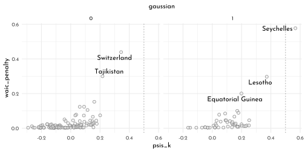
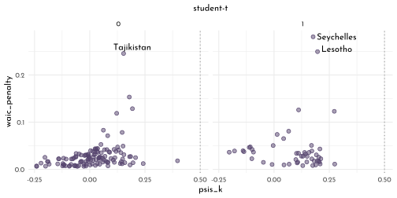
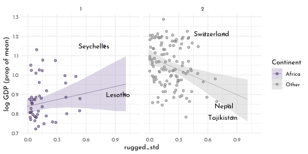
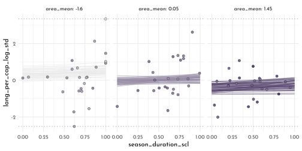
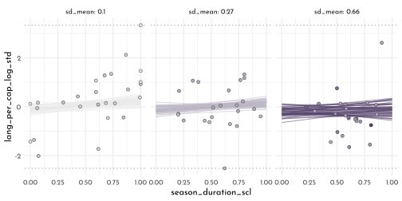
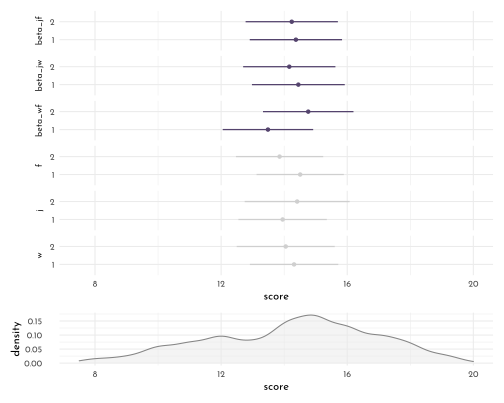

9 Rethinking: Chapter 8
Conditional Manatees
by Richard McElreath, building on the Summaries by Solomon Kurz.
9.1 Building an Interaction
Investigating how ruggedness influences countries GDP, conditional on whether the country is African or not.
library(rethinking)
p_dag1 <- dagify(G ~ R + C + U,
R ~ U,
coords = tibble(name = c("R", "G", "C", "U"),
x = c(0, .5, 1, .5),
y = c(1, 1, 1, 0))) %>%
fortify() %>%
mutate(stage = if_else(name == "G", "response",
if_else(name %in% c("R", "C"),
"predictor", "confounds"))) %>%
plot_dag(clr_in = clr3)
p_dag2 <- dagify(G ~ R + H + U,
R ~ U,
H ~ R + C,
coords = tibble(name = c("R", "G", "C", "H", "U"),
x = c(.33, 0, 1, .66, 0),
y = c(.5, 1, .5, .5, 0))) %>%
fortify() %>%
mutate(stage = if_else(name == "G", "response",
if_else(name %in% c("R", "C", "H"),
"predictor", "confounds"))) %>%
plot_dag(clr_in = clr3)
p_dag1 +
p_dag2 +
plot_annotation(tag_levels = "a") &
scale_y_continuous(limits = c(-.1, 1.1)) &
scale_x_continuous(limits = c(-.05, 1.05)) &
coord_fixed(ratio = .55) &
theme(plot.tag = element_text(family = fnt_sel))
\(\rightarrow\) the DAGs are agnostic to interactions: all they show is that in a, \(G\) is a function of both \(R\) and \(C\) (\(G = f(R, C)\)) regardless of the existence of interaction between the two influences.
Importing the ruggedness data:
data(rugged)
data_rugged <- rugged %>%
as_tibble() %>%
mutate(log_gdp = log(rgdppc_2000)) %>%
filter(complete.cases(rgdppc_2000)) %>%
mutate(log_gdp_std = log_gdp / mean(log_gdp),
rugged_std = rugged / max(rugged),
cont_idx = as.integer(2 - cont_africa))First sketch of the model (without interaction)
\[ \begin{array}{rclr} log(y_{i}) & \sim & Normal( \mu_{i}, \sigma) & \textrm{[likelihood]}\\ \mu_{i} & = & \alpha + \beta (r_{i} - \overline{r}) & \textrm{[linear model]}\\ \alpha & \sim & Normal(1, 1) & \textrm{[$\alpha$ prior]}\\ \beta & \sim & Normal(0, 1) & \textrm{[$\beta$ prior]}\\ \sigma & \sim & Exponential(1) & \textrm{[$\sigma$ prior]} \end{array} \]
(rugged_mean <- mean(data_rugged$rugged_std))#> [1] 0.2149601model_rugged_draft <- quap(
flist = alist(
log_gdp_std ~ dnorm(mu, sigma),
mu <- alpha + beta * ( rugged_std - 0.215 ),
alpha ~ dnorm(1, 1),
beta ~ dnorm(0, 1),
sigma ~ dexp(1)
),
data = data_rugged
)Prior predictions
set.seed(13)
rugged_priors <- extract.prior(model_rugged_draft) %>%
as_tibble()
prior_prediction_range <- c(-.2, 1.2)
rugged_prior_predictions <- link(model_rugged_draft,
post = rugged_priors,
data = list(rugged_std = prior_prediction_range)) %>%
as_tibble() %>%
set_names(nm = as.character(prior_prediction_range)) %>%
mutate(.draw = row_number())
p_prior_draft <- rugged_prior_predictions %>%
filter(.draw < 51) %>%
ggplot() +
geom_segment(aes(x = -.2, xend = 1.2,
y = `-0.2`, yend = `1.2`,
group = .draw, color = .draw ==26),
size = .4, alpha = .6) +
labs(title = glue("{mth('\U03B1 \U007E')} Normal(1, 1)<br>{mth('\U03B2 \U007E')} Normal(0, 1)"),
x = "ruggedness_std",
y = "log GDP (prop of mean)") +
scale_color_manual(values = c(`FALSE` = clr0d, `TRUE` = clr1), guide = "none")Proportion of extreme slopes (\(\gt 0.6\)) within the prior:
sum(abs(rugged_priors$beta) > .6) / length(rugged_priors$beta)#> [1] 0.534Restricting the priors for \(\alpha\) and \(\beta\) to more reasonable ranges:
\[ \begin{array}{rclr} \alpha & \sim & Normal(1, 0.1) & \textrm{[$\alpha$ prior]}\\ \beta & \sim & Normal(0, 0.3) & \textrm{[$\beta$ prior]}\\ \end{array} \]
model_rugged_restricted <- quap(
flist = alist(
log_gdp_std ~ dnorm(mu, sigma),
mu <- alpha + beta * ( rugged_std - 0.215 ),
alpha ~ dnorm(1, 0.1),
beta ~ dnorm(0, 0.3),
sigma ~ dexp(1)
),
data = data_rugged
)
rugged_restricted_priors <- extract.prior(model_rugged_restricted) %>%
as_tibble()
rugged_restricted_prior_predictions <- link(model_rugged_restricted,
post = rugged_restricted_priors,
data = list(rugged_std = prior_prediction_range)) %>%
as_tibble() %>%
set_names(nm = as.character(prior_prediction_range)) %>%
mutate(.draw = row_number())
p_prior_restricted <- rugged_restricted_prior_predictions %>%
filter(.draw < 51) %>%
ggplot() +
geom_segment(aes(x = -.2, xend = 1.2,
y = `-0.2`, yend = `1.2`),
color = clr0d,
size = .4, alpha = .6) +
labs(title = glue("{mth('\U03B1 \U007E')} Normal(1, 0.1)<br>{mth('\U03B2 \U007E')} Normal(0, 0.3)"),
x = "ruggedness_std",
y = "log GDP (prop of mean)")
p_prior_draft + p_prior_restricted +
plot_annotation(tag_levels = "a") &
geom_hline(yintercept = range(data_rugged$log_gdp_std),
linetype = 3, color = clr_dark) &
coord_cartesian(ylim = c(.5, 1.5),
xlim = c(-.2, 1.2)) &
theme(plot.title = element_markdown(),
plot.tag = element_text(family = fnt_sel))
precis(model_rugged_restricted) %>%
knit_precis()| param | mean | sd | 5.5% | 94.5% |
|---|---|---|---|---|
| alpha | 1.00 | 0.01 | 0.98 | 1.02 |
| beta | 0.00 | 0.05 | -0.09 | 0.09 |
| sigma | 0.14 | 0.01 | 0.12 | 0.15 |
9.1.1 Adding an index variable is not enough
Updating the model to include a index variable:
\[ \begin{array}{rclr} \mu_{i} & = & \alpha_{CID[i]} + \beta (r_{i} - \overline{r}) & \textrm{[linear model]}\\ \end{array} \]
model_rugged_index <- quap(
flist = alist(
log_gdp_std ~ dnorm(mu, sigma),
mu <- alpha[cont_idx] + beta * ( rugged_std - 0.215 ),
alpha[cont_idx] ~ dnorm(1, 0.1),
beta ~ dnorm(0, 0.3),
sigma ~ dexp(1)
),
data = data_rugged
)
compare(model_rugged_restricted,
model_rugged_index)#> WAIC SE dWAIC dSE pWAIC
#> model_rugged_index -252.2759 15.30586 0.00000 NA 4.248819
#> model_rugged_restricted -188.8157 13.20582 63.46027 15.12848 2.665296
#> weight
#> model_rugged_index 1.00000e+00
#> model_rugged_restricted 1.65874e-14precis(model_rugged_index, depth = 2) %>%
knit_precis()| param | mean | sd | 5.5% | 94.5% |
|---|---|---|---|---|
| alpha[1] | 0.88 | 0.02 | 0.85 | 0.91 |
| alpha[2] | 1.05 | 0.01 | 1.03 | 1.07 |
| beta | -0.05 | 0.05 | -0.12 | 0.03 |
| sigma | 0.11 | 0.01 | 0.10 | 0.12 |
rugged_index_posterior <- extract.samples(model_rugged_index) %>%
as_tibble() %>%
mutate(diff = alpha[,1 ] - alpha[,2])
PI(rugged_index_posterior$diff)#> 5% 94%
#> -0.1996424 -0.1382548rugged_range <- seq(from = -.01, to = 1.01, length.out = 51)
draw_posterior_samples <- function(idx, model){
link(model,
data = tibble(cont_idx = idx, rugged_std = rugged_range)) %>%
as_tibble() %>%
set_names(nm = as.character(rugged_range)) %>%
pivot_longer(everything(),
values_to = "log_gdp_std",
names_to = "rugged_std") %>%
mutate(cont_idx = idx,
rugged_std = as.numeric(rugged_std))
}
rugged_index_posterior <- bind_rows(draw_posterior_samples(1, model = model_rugged_index),
draw_posterior_samples(2, model = model_rugged_index))
rugged_index_posterior_pi <- rugged_index_posterior %>%
group_by(rugged_std, cont_idx) %>%
summarise(mean = mean(log_gdp_std),
PI_lower = PI(log_gdp_std, prob = .97)[1],
PI_upper = PI(log_gdp_std, prob = .97)[2]) %>%
ungroup()
ggplot(mapping = aes(x = rugged_std)) +
geom_smooth(data = rugged_index_posterior_pi, stat = "identity",
aes(y = mean, ymin = PI_lower, ymax = PI_upper,
color = factor(cont_idx),
fill = after_scale(clr_alpha(clr_lighten(color)))),
size = .2) +
geom_point(data = data_rugged,
aes(y = log_gdp_std,
color = factor(cont_idx),
fill = after_scale(clr_alpha(color))),
size = 1.5, shape = 21) +
labs(y = "log GDP (prop of mean)") +
scale_color_manual("Continent",
values = c(`1` = clr1, `2` = clr0dd),
labels = c(`1` = "Africa", `2` = "Other"))
9.1.2 Adding an interaction does work
Updating the model to also include a random slope:
\[ \begin{array}{rclr} \mu_{i} & = & \alpha_{CID[i]} + \beta_{CID[i]} (r_{i} - \overline{r}) & \textrm{[linear model]}\\ \end{array} \]
model_rugged_slope <- quap(
flist = alist(
log_gdp_std ~ dnorm(mu, sigma),
mu <- alpha[cont_idx] + beta[cont_idx] * ( rugged_std - 0.215 ),
alpha[cont_idx] ~ dnorm(1, 0.1),
beta[cont_idx] ~ dnorm(0, 0.3),
sigma ~ dexp(1)
),
data = data_rugged
)
precis(model_rugged_slope, depth = 2) %>%
knit_precis()| param | mean | sd | 5.5% | 94.5% |
|---|---|---|---|---|
| alpha[1] | 0.89 | 0.02 | 0.86 | 0.91 |
| alpha[2] | 1.05 | 0.01 | 1.03 | 1.07 |
| beta[1] | 0.13 | 0.07 | 0.01 | 0.25 |
| beta[2] | -0.14 | 0.05 | -0.23 | -0.06 |
| sigma | 0.11 | 0.01 | 0.10 | 0.12 |
compare(model_rugged_restricted,
model_rugged_index,
model_rugged_slope,
func = PSIS) %>%
knit_precis(param_name = "model")| model | PSIS | SE | dPSIS | dSE | pPSIS | weight |
|---|---|---|---|---|---|---|
| model_rugged_slope | -258.72 | 15.27 | 0.00 | NA | 5.38 | 0.96 |
| model_rugged_index | -252.31 | 15.31 | 6.41 | 6.91 | 4.21 | 0.04 |
| model_rugged_restricted | -188.75 | 13.39 | 69.97 | 15.51 | 2.71 | 0.00 |
library(ggdist)
set.seed(42)
(data_rugged_psis <- PSIS(model_rugged_slope, pointwise = TRUE) %>%
as_tibble() %>%
bind_cols(data_rugged)) %>%
ggplot(aes(x = factor(cont_idx), y = k)) +
geom_boxplot(#adjust = 1,
aes(color = factor(cont_idx),
fill = after_scale(clr_alpha(color))))+
geom_text(data = . %>% filter(k > .25),
aes(x = cont_idx + .1, label = country),
hjust = 0, family = fnt_sel) +
scale_color_manual("Continent",
values = c(`1` = clr1, `2` = clr0dd),
labels = c(`1` = "Africa", `2` = "Other")) +
labs(x = "continent")
rugged_slope_posterior <- bind_rows(draw_posterior_samples(1, model = model_rugged_slope),
draw_posterior_samples(2, model = model_rugged_slope))
rugged_slope_posterior_pi <- rugged_slope_posterior %>%
group_by(rugged_std, cont_idx) %>%
summarise(mean = mean(log_gdp_std),
PI_lower = PI(log_gdp_std, prob = .97)[1],
PI_upper = PI(log_gdp_std, prob = .97)[2]) %>%
ungroup()
ggplot(mapping = aes(x = rugged_std)) +
geom_smooth(data = rugged_slope_posterior_pi, stat = "identity",
aes(y = mean, ymin = PI_lower, ymax = PI_upper,
color = factor(cont_idx),
fill = after_scale(clr_alpha(clr_lighten(color)))),
size = .2) +
geom_point(data = data_rugged,
aes(y = log_gdp_std,
color = factor(cont_idx),
fill = after_scale(clr_alpha(color))),
size = 1.5, shape = 21) +
ggrepel::geom_text_repel(data = data_rugged_psis %>% filter(k > .25),
aes(y = log_gdp_std,
x = rugged_std + .1,
label = country),
force = 20,
hjust = 0, family = fnt_sel) +
labs(y = "log GDP (prop of mean)") +
facet_wrap(cont_idx ~ .) +
scale_color_manual("Continent",
values = c(`1` = clr1, `2` = clr0dd),
labels = c(`1` = "Africa", `2` = "Other"))9.2 Symetry of Interactions
Rewriting the linear model to highlight the symmetry between conditional slope and conditional intercept:
\[ \mu_{i} = \underbrace{(2 - CID_{i}) \big( \alpha_{1} + \beta_{1} (r_{i} - \overline{r}) \big)}_{CID[i] = 1} + \underbrace{(CID_{i} - 1) \big( \alpha_{2} + \beta_{2} (r_{i} - \overline{r}) \big)}_{CID[i] = 2} \]
Plotting a counterfactual effect of comparing the association of log GPD with being in Africa while holding ruggedness constant:
rugged_slope_posterior_delta <- rugged_slope_posterior %>%
group_by(cont_idx, rugged_std) %>%
mutate(.draw = row_number()) %>%
ungroup() %>%
pivot_wider(names_from = cont_idx,
values_from = log_gdp_std,
names_prefix = "log_gdp_std_") %>%
mutate(delta_log_gdp_std = log_gdp_std_1 - log_gdp_std_2)
rugged_slope_posterior_delta_pi <- rugged_slope_posterior_delta %>%
group_by(rugged_std) %>%
summarise(mean = mean(delta_log_gdp_std),
PI_lower = PI(delta_log_gdp_std, prob = .97)[1],
PI_upper = PI(delta_log_gdp_std, prob = .97)[2]) %>%
ungroup()
ggplot(mapping = aes(x = rugged_std)) +
geom_hline(yintercept = 0, color = clr_dark, linetype = 3) +
geom_smooth(data = rugged_slope_posterior_delta_pi, stat = "identity",
aes(y = mean, ymin = PI_lower, ymax = PI_upper),
color = clr0d,
fill = fll0,
size = .2) +
geom_text(data = tibble(y = .03 * c(-1,1),
lab = c("Africa lower GDP",
"Africa higher GDP")),
aes(x = .01, y = y, label = lab),
family = fnt_sel, hjust = 0) +
labs(y = "expected difference log GDP")… it it simultaneously consistent with the data and the model, that the influence of ruggedness depends on the continent and that the influence of the continent depends on ruggedness.
9.3 Continuous Interaction
data(tulips)
precis(tulips) %>%
knit_precis()| param | mean | sd | 5.5% | 94.5% | histogram |
|---|---|---|---|---|---|
| bed | NaN | NA | NA | NA | |
| water | 2.00 | 0.83 | 1.00 | 3.00 | ▇▁▁▁▇▁▁▁▁▇ |
| shade | 2.00 | 0.83 | 1.00 | 3.00 | ▇▁▁▁▇▁▁▁▁▇ |
| blooms | 128.99 | 92.68 | 4.31 | 280.79 | ▅▇▇▂▃▁▁▁ |
data_tulips <- tulips %>%
as_tibble() %>%
mutate(blooms_std = blooms / max(blooms),
water_cent = water - mean(water),
shade_cent = shade - mean(shade))dagify(B ~ S + W,
coords = tibble(name = c("B", "W", "S"),
x = c(.5, 0, 1),
y = c(1, 1, 1))) %>%
fortify() %>%
mutate(stage = if_else(name == "B", "response",
if_else(name %in% c("W", "S"),
"predictor", "confounds"))) %>%
plot_dag(clr_in = clr3) +
coord_fixed(ratio = .6,
xlim = c(-.05, 1.05),
ylim = c(.9, 1.1))We are going to build two models, one without any interaction and one with.
9.3.1 Model without Interaction
\[ \begin{array}{rclr} B_{i} & \sim & Normal( \mu_{i}, \sigma) & \textrm{[likelihood]}\\ \mu_{i} & = & \alpha + \beta_{W} (W_{i} - \overline{W}) + \beta_{S} (S_{i} - \overline{S}) & \textrm{[linear model]}\\ \alpha & \sim & Normal(0.5, 0.25) & \textrm{[$\alpha$ prior]}\\ \beta_{W} & \sim & Normal(0, 0.25) & \textrm{[$\beta_{W}$ prior]}\\ \beta_{S} & \sim & Normal(0, 0.25) & \textrm{[$\beta_{S}$ prior]}\\ \sigma & \sim & Exponential(1) & \textrm{[$\sigma$ prior]} \end{array} \]
Considerations for the priors:
Ranges assigned if we used \(alpha = Normal(0.5, 1)\) instead:
alpha <- rnorm(1e4, 0.5, 1); sum(alpha < 0 | alpha > 1) / length(alpha)#> [1] 0.6251updating to a more restrictive prior (used in the model):
alpha <- rnorm(1e4, 0.5, .25); sum(alpha < 0 | alpha > 1) / length(alpha)#> [1] 0.0498model_tulips_simple <- quap(
flist = alist(
blooms_std ~ dnorm(mu, sigma),
mu <- alpha + beta_w * water_cent + beta_s * shade_cent,
alpha ~ dnorm(.5, .25),
beta_w ~ dnorm(0,.25),
beta_s ~ dnorm(0,.25),
sigma ~ dexp(1)
),
data = data_tulips
)
precis(model_tulips_simple) %>%
knit_precis()| param | mean | sd | 5.5% | 94.5% |
|---|---|---|---|---|
| alpha | 0.36 | 0.03 | 0.31 | 0.41 |
| beta_w | 0.21 | 0.04 | 0.15 | 0.26 |
| beta_s | -0.11 | 0.04 | -0.17 | -0.05 |
| sigma | 0.16 | 0.02 | 0.12 | 0.19 |
9.3.2 Model with Interaction
Implementing the continuous interaction
\[ \begin{array}{rcl} \mu_{i} & = & \alpha + \gamma_{W,i} \beta_{W} W_{i} + \beta_{S} S_{i} \\ \gamma_{W,i} & = & \beta_{W} + \beta_{WS} S_{i}\\ \end{array} \]
which allows the substitution
\[ \begin{array}{rcl} \mu_{i} & = & \alpha + \underbrace{(\beta_{W} + \beta_{WS} S_{i})}_{\gamma_{W,i} } \beta_{W} W_{i} + \beta_{S} S_{i} \\ & = & \alpha + \beta_{W} W_{i} + \beta_{S} S_{i} + \beta_{WS} W_{i} S_{i}\\ \end{array} \]
Using this for the complete model:
\[ \begin{array}{rclr} B_{i} & \sim & Normal( \mu_{i}, \sigma) & \textrm{[likelihood]}\\ \mu_{i} & = & \alpha + \beta_{W} W_{i} + \beta_{S} S_{i} + \beta_{WS} W_{i} S_{i} & \textrm{[linear model]} \\ \alpha & \sim & Normal(0.5, 0.25) & \textrm{[$\alpha$ prior]}\\ \beta_{W} & \sim & Normal(0, 0.25) & \textrm{[$\beta_{W}$ prior]}\\ \beta_{S} & \sim & Normal(0, 0.25) & \textrm{[$\beta_{S}$ prior]}\\ \beta_{WS} & \sim & Normal(0, 0.25) & \textrm{[$\beta_{S}$ prior]}\\ \sigma & \sim & Exponential(1) & \textrm{[$\sigma$ prior]} \end{array} \]
model_tulips_interaction <- quap(
flist = alist(
blooms_std ~ dnorm(mu, sigma),
mu <- alpha + beta_w * water_cent + beta_s * shade_cent + beta_ws * water_cent * shade_cent,
alpha ~ dnorm(.5, .25),
beta_w ~ dnorm(0,.25),
beta_s ~ dnorm(0,.25),
beta_ws ~ dnorm(0,.25),
sigma ~ dexp(1)
),
data = data_tulips
)
precis(model_tulips_interaction) %>%
knit_precis()| param | mean | sd | 5.5% | 94.5% |
|---|---|---|---|---|
| alpha | 0.36 | 0.02 | 0.32 | 0.40 |
| beta_w | 0.21 | 0.03 | 0.16 | 0.25 |
| beta_s | -0.11 | 0.03 | -0.16 | -0.07 |
| beta_ws | -0.14 | 0.04 | -0.20 | -0.09 |
| sigma | 0.12 | 0.02 | 0.10 | 0.15 |
9.3.3 Plotting the Posterior Predictions
tulip_range <- cross_df(list(water_cent = -1:1,
shade_cent = -1:1)) %>%
mutate(rn = row_number())
tulips_simple_posterior <- link(model_tulips_simple, data = tulip_range) %>%
as_tibble() %>%
set_names(nm = 1:length(names(.))) %>%
mutate(.draw = row_number()) %>%
pivot_longer(-.draw, names_to = "rn", values_to = "blooms") %>%
mutate(rn = as.numeric(rn), model = "simple") %>%
left_join(tulip_range)
tulips_interaction_posterior <- link(model_tulips_interaction, data = tulip_range) %>%
as_tibble() %>%
set_names(nm = 1:length(names(.))) %>%
mutate(.draw = row_number()) %>%
pivot_longer(-.draw, names_to = "rn", values_to = "blooms") %>%
mutate(rn = as.numeric(rn), model = "interaction") %>%
left_join(tulip_range)
tulips_posterior <- tulips_simple_posterior %>%
bind_rows(tulips_interaction_posterior) %>%
mutate(model = factor(model, levels = c("simple", "interaction")))
tulips_posterior_pi <- tulips_posterior %>%
group_by(model, rn,water_cent, shade_cent ) %>%
summarise(mean = mean(blooms),
PI_lower = PI(blooms, prob = .97)[1],
PI_upper = PI(blooms, prob = .97)[2]) %>%
ungroup()
tulips_posterior %>%
ggplot(aes(x = water_cent)) +
geom_line(data = . %>%
filter(.draw < 21),
aes(y = blooms ,
group = .draw, color = .draw == 20)) +
geom_point(data = data_tulips, aes(y = blooms_std),
color = clr_dark) +
facet_grid(model ~ shade_cent, labeller = label_both,switch = "y") +
scale_color_manual(values = c(`FALSE` = fll0, `TRUE` = fll1)) +
theme(legend.position = "bottom",
strip.placement = "outside")tulips_posterior_pi %>%
ggplot(aes(x = water_cent)) +
geom_point(data = data_tulips, aes(y = blooms_std),
color = clr_dark) +
geom_smooth(stat = "identity",
aes(y = mean, ymin = PI_lower, ymax = PI_upper),
color = clr0dd, fill = clr_alpha(clr0dd), size = .5) +
facet_grid(model ~ shade_cent, labeller = label_both,switch = "y") +
theme(legend.position = "bottom",
strip.placement = "outside")9.3.4 Plotting the Prior Predictions
set.seed(5)
tulips_simple_prior <- extract.prior(model_tulips_simple,
data = tulip_range) %>%
as_tibble() %>%
mutate(.draw = row_number(),
grid = rep(list(cross_df(list(water_cent = -1:1,
shade_cent = -1:1))), n()),
model = "simple") %>%
unnest(grid) %>%
mutate(blooms = alpha + beta_w * water_cent + beta_s * shade_cent)
tulips_interaction_prior <- extract.prior(model_tulips_interaction,
data = tulip_range) %>%
as_tibble() %>%
mutate(.draw = row_number(),
grid = rep(list(cross_df(list(water_cent = -1:1,
shade_cent = -1:1))), n()),
model = "interaction") %>%
unnest(grid) %>%
mutate(blooms = alpha + beta_w * water_cent + beta_s * shade_cent + beta_ws * water_cent * shade_cent)
tulips_prior <- tulips_simple_prior %>%
bind_rows(tulips_interaction_prior) %>%
mutate(model = factor(model, levels = c("simple", "interaction")))
tulips_prior_pi <- tulips_prior %>%
group_by(model, water_cent, shade_cent ) %>%
summarise(mean = mean(blooms),
PI_lower = PI(blooms, prob = .97)[1],
PI_upper = PI(blooms, prob = .97)[2]) %>%
ungroup()
tulips_prior %>%
ggplot(aes(x = water_cent)) +
geom_line(data = . %>%
filter(.draw < 21),
aes(y = blooms ,
group = .draw, color = .draw == 20)) +
geom_hline(yintercept = c(0, 1), linetype = 3, color = clr_dark) +
facet_grid(model ~ shade_cent, labeller = label_both, switch = "y") +
scale_color_manual(values = c(`FALSE` = clr_alpha(clr0d), `TRUE` = fll1)) +
theme(legend.position = "bottom",
strip.placement = "outside") +
coord_cartesian(ylim = c(-.35,1.35))tulips_prior_pi %>%
ggplot(aes(x = water_cent)) +
geom_smooth(stat = "identity",
aes(y = mean, ymin = PI_lower, ymax = PI_upper),
color = clr0dd, fill = clr_alpha(clr0dd), size = .5) +
geom_hline(yintercept = c(0, 1), linetype = 3, color = clr_dark) +
facet_grid(model ~ shade_cent, labeller = label_both,switch = "y") +
theme(legend.position = "bottom",
strip.placement = "outside")
library(rlang)
chapter8_models <- env(
data_rugged = data_rugged,
model_rugged_draft = model_rugged_draft,
model_rugged_restricted = model_rugged_restricted,
model_rugged_index = model_rugged_index,
model_rugged_slope = model_rugged_slope,
data_tulips = data_tulips
)
write_rds(chapter8_models, "envs/chapter8_models.rds")9.4 Homework
E1
- Bread dough rises because of
yeast * temperature Education * countryleads to higher incomeGasoline * keymakes car go
E2
Which ones of the following explanations invoke an interaction
- Caramelizing onions requires cooking over low heat and making sure the onions do not dry out.
- A car will go faster when it has more cylinders and when it has a better fuel injector.
Most people acquire their political beliefs from their parents, unless they get them instead from their friends.Intelligent animals tend to be either highly social or have manipulative appendages (hands, tentacles, etc.).
E3
\[ \begin{array}{rrcl} 1. & caramel & = & \alpha + \beta_{temp} \times temp + \beta_{moist} \times moist + \beta_{drying} \times temp \times moist\\ 2. & max\_speed & = & \alpha_{[cyl]} + \beta_{efficieny[cyl]} \times inject \\ 3. & polit & = & \alpha_{[influence\_group]} \\ 4. & intelligence & = & \alpha_{[appendages]} + beta_{sociality} \times sociality\\ \end{array} \]
M1
This could be due to a three-way interaction, where the effect of water on blooms and of light on blooms, as well as the interaction effect of water and light on blooms also depend on temperature, with high temperature intervening negatively on all other effects.
M2
\[ \begin{array}{rcl} \mu_{i} & = & \alpha_{[temp]} + \beta_{W[temp]} W_{i} + \beta_{S[temp]} S_{i} + \beta_{WS[temp]} W_{i} S_{i}\\ \end{array} \]
with
- \(\alpha_{[hot]} = 0\)
- \(\beta_{W[hot]} = 0\)
- \(\beta_{S[hot]} = 0\)
- \(\beta_{WS[hot]} = 0\)
M3
n <- 5e2
raven_data <- tibble(
wolves_std = rep(round(c(1, 3, 10)/10, digits = 2),
each = n), #rbinom(n, size = 10, .45),
wolve_area = rnorm(n = n * 3),
raven = rnorm(n = n * 3,
mean = wolves_std + wolve_area / wolves_std, sd = 1.5))
raven_data %>%
ggplot(aes(x = wolve_area, y = raven)) +
geom_point(color = clr_alpha(clr0d)) +
facet_wrap(wolves_std~ ., labeller = label_both)There should be non-linear effects once the wolves deplete all their food sources.
M4
model_tulips_interaction_restricted <- quap(
flist = alist(
blooms_std ~ dnorm(mu, sigma),
mu <- alpha + beta_w * water_cent + beta_s * shade_cent + beta_ws * water_cent * shade_cent,
alpha ~ dnorm(.5, .25),
beta_w ~ dunif(0,.5),
beta_s ~ dunif(-.5,0),
beta_ws ~ dnorm(0,.5),
sigma ~ dexp(1)
),
data = data_tulips,
start = list(beta_w = .25,beta_s = -.25, beta_ws = .2)
)
precis(model_tulips_interaction_restricted) %>%
knit_precis()| param | mean | sd | 5.5% | 94.5% |
|---|---|---|---|---|
| beta_w | 0.21 | 0.03 | 0.16 | 0.26 |
| beta_s | -0.12 | 0.03 | -0.16 | -0.07 |
| beta_ws | -0.15 | 0.04 | -0.20 | -0.09 |
| alpha | 0.36 | 0.02 | 0.32 | 0.40 |
| sigma | 0.12 | 0.02 | 0.10 | 0.15 |
# set.seed(5)
tulips_simple_prior_restricted <- extract.prior(model_tulips_interaction_restricted,
data = tulip_range) %>%
as_tibble() %>%
mutate(.draw = row_number(),
grid = rep(list(cross_df(list(water_cent = -1:1,
shade_cent = -1:1))), n()),
model = "simple") %>%
unnest(grid) %>%
mutate(blooms = alpha + beta_w * water_cent + beta_s * shade_cent)
tulips_interaction_prior_restricted <- extract.prior(model_tulips_interaction_restricted,
data = tulip_range) %>%
as_tibble() %>%
mutate(.draw = row_number(),
grid = rep(list(cross_df(list(water_cent = -1:1,
shade_cent = -1:1))), n()),
model = "interaction") %>%
unnest(grid) %>%
mutate(blooms = alpha + beta_w * water_cent + beta_s * shade_cent + beta_ws * water_cent * shade_cent)
tulips_prior_restricted_pi <- tulips_interaction_prior_restricted %>%
group_by( water_cent, shade_cent ) %>%
summarise(mean = mean(blooms),
PI_lower = PI(blooms, prob = .97)[1],
PI_upper = PI(blooms, prob = .97)[2]) %>%
ungroup()
tulips_interaction_prior_restricted %>%
ggplot(aes(x = water_cent)) +
geom_line(data = . %>%
filter(.draw < 41),
aes(y = blooms ,
group = .draw, color = .draw == 20)) +
geom_hline(yintercept = c(0, 1), linetype = 3, color = clr_dark) +
facet_grid(. ~ shade_cent, labeller = label_both, switch = "y") +
scale_color_manual(values = c(`FALSE` = clr_alpha(clr0d), `TRUE` = fll1)) +
theme(legend.position = "bottom",
strip.placement = "outside") +
coord_cartesian(ylim = c(-.35,1.35))H1
model_tulips_bed_plain <- quap(
flist = alist(
blooms_std ~ dnorm(mu, sigma),
mu <- alpha[bed] + beta_w * water_cent + beta_s * shade_cent + beta_ws * water_cent * shade_cent,
alpha[bed] ~ dnorm(.5, .25),
beta_w ~ dnorm(0,.25),
beta_s ~ dnorm(0,.25),
beta_ws ~ dnorm(0,.25),
sigma ~ dexp(1)
),
data = data_tulips
)
precis(model_tulips_bed_plain, depth = 2) %>%
knit_precis()| param | mean | sd | 5.5% | 94.5% |
|---|---|---|---|---|
| alpha[1] | 0.27 | 0.04 | 0.22 | 0.33 |
| alpha[2] | 0.40 | 0.04 | 0.34 | 0.45 |
| alpha[3] | 0.41 | 0.04 | 0.35 | 0.47 |
| beta_w | 0.21 | 0.03 | 0.17 | 0.25 |
| beta_s | -0.11 | 0.03 | -0.15 | -0.07 |
| beta_ws | -0.14 | 0.03 | -0.19 | -0.09 |
| sigma | 0.11 | 0.01 | 0.08 | 0.13 |
H2
compare(model_tulips_interaction,
model_tulips_bed_plain) %>%
knit_precis(param_name = "model")| model | WAIC | SE | dWAIC | dSE | pWAIC | weight |
|---|---|---|---|---|---|---|
| model_tulips_bed_plain | -22.98 | 9.96 | 0.00 | NA | 9.94 | 0.62 |
| model_tulips_interaction | -22.03 | 10.49 | 0.95 | 7.8 | 6.63 | 0.38 |
There seems to be some preference for the model including bed, but the weight is only at ~66% and the SEs are quite large compared to the \(\Delta WAIC\).
posterior distributions of the model parameters
library(tidybayes)
library(tidybayes.rethinking)
model_tulips_bed_plain %>%
recover_types(data_tulips) %>%
spread_draws(alpha[bed], beta_w, beta_s, beta_ws) %>%
dplyr::select(-.chain, -.iteration) %>%
pivot_longer(cols = -c(bed, .draw),
names_to = "parameter") %>%
ggplot(aes(y = bed, x = value)) +
# geom_vline(xintercept = 0, linetype = 3, color = clr_dark) +
stat_halfeye(color = clr_dark,aes( fill = parameter)) +
facet_wrap(parameter ~ ., scales = "free_x", nrow = 1) +
scale_fill_manual(values = c(fll0,fll1,fll2,fll3), guide = "none")
The improvement of the bed model seems to stem from the fact that tulips in the ‘a’ treatment tend to have a lower blooming score.
posterior predictive
model_tulips_bed_plain %>%
recover_types(data_tulips) %>%
spread_draws(alpha[bed], beta_w, beta_s, beta_ws) %>%
dplyr::select(-.chain, -.iteration) %>%
mutate(new_data = list(crossing(water_cent = c(-1,1), shade_cent = c(-1:1)))) %>%
unnest(new_data) %>%
mutate(blooms = alpha +
beta_w * water_cent +
beta_s * shade_cent +
beta_ws * water_cent * shade_cent) %>%
ggplot(aes(x = water_cent)) +
geom_line(data = . %>%
group_by(bed) %>%
filter(.draw < 51) %>%
ungroup(),
aes(y = blooms ,
group = str_c(shade_cent, .draw), color = .draw == 50)) +
geom_point(data = data_tulips, aes(y = blooms_std),
color = clr_dark) +
facet_grid(shade_cent ~ bed, labeller = label_both,switch = "y") +
scale_color_manual(values = c(`FALSE` = fll0, `TRUE` = fll1)) +
theme(legend.position = "bottom",
strip.placement = "outside")H3
psis_k <- tibble(waic_penalty = (function(){
set.seed(set.seed(23))
WAIC(model_rugged_slope, pointwise = TRUE)$penalty})(),
psis_k = (function(){
set.seed(set.seed(23))
PSIS(model_rugged_slope, pointwise = TRUE)$k})(),
country = data_rugged$country,
cont_africa = data_rugged$cont_africa
)
psis_k %>%
ggplot(aes(x = psis_k ,y = waic_penalty)) +
geom_vline(xintercept = .5, color = clr_dark, linetype = 3) +
geom_point(shape = 21, size = 2, color = clr0dd, fill = fll0) +
ggrepel::geom_text_repel(data = psis_k,
aes(x = psis_k, label = country),
family = "Josefin Sans", direction = "both", max.overlaps = 1) +
facet_wrap(cont_africa ~ . ) +
labs(subtitle = "gaussian")
The Seychelles, Tajikistan and Switzerland seem to be the most influential points. All of those have a very rugged topography and extreme GDP values (both positive and negative)
model_rugged_robust <- quap(
flist = alist(
log_gdp_std ~ dstudent(nu = 2, mu, sigma),
mu <- alpha[cont_idx] + beta[cont_idx] * ( rugged_std - 0.215 ),
alpha[cont_idx] ~ dnorm(1, 0.1),
beta[cont_idx] ~ dnorm(0, 0.3),
sigma ~ dexp(1)
),
data = data_rugged
)
psis_k_robust <- tibble(waic_penalty = (function(){
set.seed(set.seed(23))
WAIC(model_rugged_robust, pointwise = TRUE)$penalty})(),
psis_k = (function(){
set.seed(set.seed(23))
PSIS(model_rugged_robust, pointwise = TRUE)$k})(),
country = data_rugged$country,
cont_africa = data_rugged$cont_africa
)
psis_k_robust %>%
ggplot(aes(x = psis_k ,y = waic_penalty)) +
geom_vline(xintercept = .5, color = clr_dark, linetype = 3) +
geom_point(shape = 21, size = 2, color = clr1, fill = fll1) +
ggrepel::geom_text_repel(data = psis_k_robust,
aes(x = psis_k, label = country),
family = "Josefin Sans", direction = "both", max.overlaps = 1) +
facet_wrap(cont_africa ~ . ) +
labs(subtitle = "student-t")
rugged_slope_posterior_robust <- bind_rows(
draw_posterior_samples(1, model = model_rugged_robust),
draw_posterior_samples(2, model = model_rugged_robust))
rugged_slope_posterior_robust_pi <- rugged_slope_posterior_robust %>%
group_by(rugged_std, cont_idx) %>%
summarise(mean = mean(log_gdp_std),
PI_lower = PI(log_gdp_std, prob = .97)[1],
PI_upper = PI(log_gdp_std, prob = .97)[2]) %>%
ungroup()
ggplot(mapping = aes(x = rugged_std)) +
geom_smooth(data = rugged_slope_posterior_robust_pi, stat = "identity",
aes(y = mean, ymin = PI_lower, ymax = PI_upper,
color = factor(cont_idx),
fill = after_scale(clr_alpha(clr_lighten(color)))),
size = .2) +
geom_point(data = data_rugged,
aes(y = log_gdp_std,
color = factor(cont_idx),
fill = after_scale(clr_alpha(color))),
size = 1.5, shape = 21) +
ggrepel::geom_text_repel(data = data_rugged %>%
filter(country %in% c("Seychelles", "Switzerland",
"Tajikistan", "Lesotho", "Nepal")),
aes(y = log_gdp_std,
x = rugged_std + .1,
label = country),
force = 20,
hjust = 0, family = fnt_sel) +
labs(y = "log GDP (prop of mean)") +
facet_wrap(cont_idx ~ .) +
scale_color_manual("Continent",
values = c(`1` = clr1, `2` = clr0dd),
labels = c(`1` = "Africa", `2` = "Other"))
H4
data(nettle)
data_nettle <- nettle %>%
as_tibble() %>%
mutate(lang.per.capita = num.lang / k.pop,
lang_per_cap_log = log(lang.per.capita),
lang_per_cap_log_std = standardize(lang_per_cap_log),
area_log_std = standardize(log(area)),
season_duration_scl = mean.growing.season / max(mean.growing.season),
season_sd_scl = sd.growing.season / max(sd.growing.season))
data_nettle %>%
dplyr::select(lang_per_cap_log:season_sd_scl) %>%
precis()#> mean sd 5.5% 94.5%
#> lang_per_cap_log -5.456606e+00 1.5207459 -7.8066714131 -3.4116252
#> lang_per_cap_log_std -1.934656e-16 1.0000000 -1.5453372117 1.3447223
#> area_log_std 2.619731e-17 1.0000000 -1.4475375475 1.3737581
#> season_duration_scl 5.867905e-01 0.2619871 0.0692416667 0.9926458
#> season_sd_scl 2.894700e-01 0.1816151 0.0008943782 0.5961755
#> histogram
#> lang_per_cap_log ▁▁▂▅▇▂▂▁▁▁
#> lang_per_cap_log_std ▁▁▁▂▃▇▇▂▃▁▁▁▁
#> area_log_std ▁▁▁▅▃▇▅▇▃▁▁
#> season_duration_scl ▃▁▃▂▃▇▇▇▃▃
#> season_sd_scl ▃▇▇▇▂▂▁▁▁▁\[ \begin{array}{rclr} L_{i} & \sim & Normal( \mu_{i}, \sigma) & \textrm{[likelihood]}\\ \mu_{i} & = & \alpha + \beta_{D} D_{i} + \beta_{A} A_{i}& \textrm{[linear model]} \\ \alpha & \sim & Log-Normal(0, 0.15) & \textrm{[$\alpha$ prior]}\\ \beta_{D} & \sim & Normal(0, 0.25) & \textrm{[$\beta_{W}$ prior]}\\ \beta_{A} & \sim & Normal(0, 0.25) & \textrm{[$\beta_{S}$ prior]}\\ \sigma & \sim & Exponential(1) & \textrm{[$\sigma$ prior]} \end{array} \]
model_lang_dur_area <- quap(
flist = alist(
lang_per_cap_log_std ~ dnorm(mu, sigma),
mu <- alpha +
beta_d * season_duration_scl +
beta_a * area_log_std ,
alpha ~ dnorm(0, 0.15),
c(beta_d, beta_a) ~ dnorm(0, 0.25),
sigma ~ dexp(1)
),
data = data_nettle
)
precis(model_lang_dur_area) %>%
knit_precis()| param | mean | sd | 5.5% | 94.5% |
|---|---|---|---|---|
| alpha | -0.07 | 0.11 | -0.25 | 0.11 |
| beta_d | 0.19 | 0.18 | -0.10 | 0.48 |
| beta_a | -0.22 | 0.10 | -0.38 | -0.06 |
| sigma | 0.94 | 0.08 | 0.81 | 1.06 |
area_classes <- quantile(data_nettle$area_log_std, seq(0,1,length.out = 4))
area_means <- (area_classes[1:3]+area_classes[2:4])/2
model_lang_dur_area %>%
spread_draws(alpha, beta_d, beta_a) %>%
dplyr::select(-.chain, -.iteration) %>%
mutate(new_data = list(crossing(season_duration_scl = range(data_nettle$season_duration_scl),
area_log_std = area_means))) %>%
unnest(new_data) %>%
mutate(lang_per_cap_log_std = alpha +
beta_d * season_duration_scl +
beta_a * area_log_std,
area_class = cut(area_log_std,area_classes + c(-.1, rep(0, 2), .1)),
area_mean = area_means[as.numeric(area_class)] %>% round(digits = 2)) %>%
ggplot(aes(x = season_duration_scl)) +
geom_line(data = . %>%
filter(.draw < 51) %>%
ungroup(),
aes(y = lang_per_cap_log_std ,
group = str_c(.draw, area_log_std), color = area_log_std)) +
geom_hline(yintercept = range(data_nettle$lang_per_cap_log_std),
linetype = 3, color = clr_dark) +
geom_point(data = data_nettle %>%
mutate(area_class = cut(area_log_std,area_classes + c(-.1, rep(0, 2), .1)),
area_mean = area_means[as.numeric(area_class)] %>% round(digits = 2)),
aes(y = lang_per_cap_log_std,
fill = area_log_std, color = after_scale(clr_darken(fill))),
shape = 21) +
scale_color_gradientn(colours = c(fll0, fll1), guide = "none") +
scale_fill_gradientn(colours = c(clr0, clr1), guide = "none") +
facet_wrap(. ~ area_mean, labeller = label_both) +
theme(legend.position = "bottom",
strip.placement = "outside")
\[ \begin{array}{rclr} L_{i} & \sim & Normal( \mu_{i}, \sigma) & \textrm{[likelihood]}\\ \mu_{i} & = & \alpha + \beta_{S} S_{i} + \beta_{A} A_{i}& \textrm{[linear model]} \\ \alpha & \sim & Log-Normal(0, 0.15) & \textrm{[$\alpha$ prior]}\\ \beta_{S} & \sim & Normal(0, 0.25) & \textrm{[$\beta_{W}$ prior]}\\ \beta_{A} & \sim & Normal(0, 0.25) & \textrm{[$\beta_{S}$ prior]}\\ \sigma & \sim & Exponential(1) & \textrm{[$\sigma$ prior]} \end{array} \]
model_lang_sd_area <- quap(
flist = alist(
lang_per_cap_log_std ~ dnorm(mu, sigma),
mu <- alpha +
beta_s * season_sd_scl +
beta_a * area_log_std ,
alpha ~ dnorm(0, 0.15),
c(beta_s, beta_a) ~ dnorm(0, 0.25),
sigma ~ dexp(1)
),
data = data_nettle
)
precis(model_lang_sd_area) %>%
knit_precis()| param | mean | sd | 5.5% | 94.5% |
|---|---|---|---|---|
| alpha | 0.02 | 0.10 | -0.14 | 0.17 |
| beta_s | -0.09 | 0.22 | -0.45 | 0.26 |
| beta_a | -0.23 | 0.10 | -0.39 | -0.06 |
| sigma | 0.95 | 0.08 | 0.82 | 1.07 |
model_lang_sd_area %>%
spread_draws(alpha, beta_s, beta_a) %>%
dplyr::select(-.chain, -.iteration) %>%
mutate(new_data = list(crossing(season_sd_scl = range(data_nettle$season_sd_scl),
area_log_std = area_means))) %>%
unnest(new_data) %>%
mutate(lang_per_cap_log_std = alpha +
beta_s * season_sd_scl +
beta_a * area_log_std,
area_class = cut(area_log_std,area_classes + c(-.1, rep(0, 2), .1)),
area_mean = area_means[as.numeric(area_class)] %>% round(digits = 2)) %>%
ggplot(aes(x = season_sd_scl)) +
geom_line(data = . %>%
filter(.draw < 51) %>%
ungroup(),
aes(y = lang_per_cap_log_std ,
group = str_c(.draw, area_log_std), color = area_log_std)) +
geom_hline(yintercept = range(data_nettle$lang_per_cap_log_std),
linetype = 3, color = clr_dark) +
geom_point(data = data_nettle %>%
mutate(area_class = cut(area_log_std,area_classes + c(-.1, rep(0, 2), .1)),
area_mean = area_means[as.numeric(area_class)] %>% round(digits = 2)),
aes(y = lang_per_cap_log_std,
fill = area_log_std, color = after_scale(clr_darken(fill))),
shape = 21) +
scale_color_gradientn(colours = c(fll0, fll1), guide = "none") +
scale_fill_gradientn(colours = c(clr0, clr1), guide = "none") +
facet_wrap(. ~ area_mean, labeller = label_both) +
theme(legend.position = "bottom",
strip.placement = "outside")model_lang_inter <- quap(
flist = alist(
lang_per_cap_log_std ~ dnorm(mu, sigma),
mu <- alpha +
beta_d * season_duration_scl +
beta_s * season_sd_scl +
beta_ds * season_duration_scl * season_sd_scl,
alpha ~ dnorm(0, 0.15),
c(beta_d, beta_s) ~ dnorm(0, 0.25),
beta_ds ~ dnorm(0, 0.5),
sigma ~ dexp(1)
),
data = data_nettle
)
precis(model_lang_inter) %>%
knit_precis()| param | mean | sd | 5.5% | 94.5% |
|---|---|---|---|---|
| alpha | -0.04 | 0.12 | -0.23 | 0.14 |
| beta_d | 0.32 | 0.19 | 0.02 | 0.63 |
| beta_s | -0.20 | 0.23 | -0.57 | 0.17 |
| beta_ds | -0.38 | 0.43 | -1.07 | 0.31 |
| sigma | 0.94 | 0.08 | 0.82 | 1.07 |
sd_classes <- quantile(data_nettle$season_sd_scl, seq(0,1,length.out = 4))
sd_means <- (sd_classes[1:3]+sd_classes[2:4])/2
model_lang_inter %>%
spread_draws(alpha, beta_d, beta_s, beta_ds) %>%
dplyr::select(-.chain, -.iteration) %>%
mutate(new_data = list(crossing(season_duration_scl = range(data_nettle$season_duration_scl),
season_sd_scl = sd_means))) %>%
unnest(new_data) %>%
mutate(lang_per_cap_log_std = alpha +
beta_d * season_duration_scl +
beta_s * season_sd_scl +
beta_ds * season_duration_scl * season_sd_scl,
sd_class = cut(season_sd_scl ,sd_classes + c(-.1, rep(0, 2), .1)),
sd_mean = sd_means[as.numeric(sd_class)] %>% round(digits = 2)) %>%
ggplot(aes(x = season_duration_scl)) +
geom_line(data = . %>%
filter(.draw < 51) %>%
ungroup(),
aes(y = lang_per_cap_log_std ,
group = str_c(.draw, season_sd_scl), color = season_sd_scl)) +
geom_hline(yintercept = range(data_nettle$lang_per_cap_log_std),
linetype = 3, color = clr_dark) +
geom_point(data = data_nettle %>%
mutate(sd_class = cut(season_sd_scl ,sd_classes + c(-.1, rep(0, 2), .1)),
sd_mean = sd_means[as.numeric(sd_class)] %>% round(digits = 2)),
aes(y = lang_per_cap_log_std,
fill = season_sd_scl, color = after_scale(clr_darken(fill))),
shape = 21) +
scale_color_gradientn(colours = c(fll0, fll1), guide = "none") +
scale_fill_gradientn(colours = c(clr0, clr1), guide = "none") +
facet_wrap(. ~ sd_mean, labeller = label_both) +
theme(legend.position = "bottom",
strip.placement = "outside")
compare(model_lang_dur_area,
model_lang_sd_area,
model_lang_inter) %>%
knit_precis(param_name = "model")| model | WAIC | SE | dWAIC | dSE | pWAIC | weight |
|---|---|---|---|---|---|---|
| model_lang_inter | 208.31 | 17.09 | 0.00 | NA | 3.16 | 0.46 |
| model_lang_dur_area | 208.81 | 16.68 | 0.50 | 4.13 | 4.05 | 0.35 |
| model_lang_sd_area | 210.06 | 16.83 | 1.75 | 3.59 | 3.99 | 0.19 |
H5
data("Wines2012")
data_wine <- Wines2012 %>%
as_tibble() %>%
mutate(score_std = standardize(score),
wine_nat_idx = wine.amer + 1,
judge_nat_idx = judge.amer + 1,
wine_idx = as.numeric(wine),
judge_idx = as.numeric(judge))
unique(data_wine$wine_idx) %>% sort()#> [1] 1 2 3 4 5 6 7 8 9 10 11 12 13 14 15 16 17 18 19 20unique(data_wine$judge_idx) %>% sort()#> [1] 1 2 3 4 5 6 7 8 9\[ \begin{array}{rclr} S_{i} & \sim & Normal( \mu_{i}, \sigma) & \textrm{[likelihood]}\\ \mu_{i} & = & \alpha_{J} + \alpha_{W} & \textrm{[linear model]} \\ \alpha_{J} & \sim & Normal(0, 0.5) & \textrm{[$\alpha_{J}$ prior]}\\ \alpha_{W} & \sim & Normal(0, 0.5) & \textrm{[$\alpha_{W}$ prior]}\\ \sigma & \sim & Exponential(1) & \textrm{[$\sigma$ prior]} \end{array} \]
model_wine_static <- quap(
flist = alist(
score_std ~ dnorm(mu, sigma),
mu <- alpha_j[judge_idx] + alpha_w[wine_idx],
alpha_j[judge_idx]~ dnorm(0, 0.5),
alpha_w[wine_idx] ~ dnorm(0, 0.5),
sigma ~ dexp(1)
),
data = data_wine
)
precis(model_wine_static, depth = 2) %>%
knit_precis()| param | mean | sd | 5.5% | 94.5% |
|---|---|---|---|---|
| alpha_j[1] | -0.28 | 0.19 | -0.58 | 0.01 |
| alpha_j[2] | 0.22 | 0.19 | -0.08 | 0.51 |
| alpha_j[3] | 0.21 | 0.19 | -0.09 | 0.51 |
| alpha_j[4] | -0.55 | 0.19 | -0.85 | -0.25 |
| alpha_j[5] | 0.81 | 0.19 | 0.51 | 1.11 |
| alpha_j[6] | 0.48 | 0.19 | 0.19 | 0.78 |
| alpha_j[7] | 0.13 | 0.19 | -0.16 | 0.43 |
| alpha_j[8] | -0.67 | 0.19 | -0.97 | -0.37 |
| alpha_j[9] | -0.35 | 0.19 | -0.65 | -0.05 |
| alpha_w[1] | 0.12 | 0.25 | -0.27 | 0.51 |
| alpha_w[2] | 0.09 | 0.25 | -0.30 | 0.48 |
| alpha_w[3] | 0.24 | 0.25 | -0.16 | 0.63 |
| alpha_w[4] | 0.48 | 0.25 | 0.09 | 0.87 |
| alpha_w[5] | -0.11 | 0.25 | -0.50 | 0.28 |
| alpha_w[6] | -0.32 | 0.25 | -0.71 | 0.07 |
| alpha_w[7] | 0.25 | 0.25 | -0.14 | 0.64 |
| alpha_w[8] | 0.24 | 0.25 | -0.16 | 0.63 |
| alpha_w[9] | 0.07 | 0.25 | -0.32 | 0.46 |
| alpha_w[10] | 0.10 | 0.25 | -0.29 | 0.50 |
| alpha_w[11] | -0.01 | 0.25 | -0.40 | 0.38 |
| alpha_w[12] | -0.03 | 0.25 | -0.42 | 0.37 |
| alpha_w[13] | -0.09 | 0.25 | -0.48 | 0.30 |
| alpha_w[14] | 0.01 | 0.25 | -0.39 | 0.40 |
| alpha_w[15] | -0.19 | 0.25 | -0.58 | 0.20 |
| alpha_w[16] | -0.17 | 0.25 | -0.57 | 0.22 |
| alpha_w[17] | -0.12 | 0.25 | -0.52 | 0.27 |
| alpha_w[18] | -0.75 | 0.25 | -1.14 | -0.35 |
| alpha_w[19] | -0.14 | 0.25 | -0.53 | 0.25 |
| alpha_w[20] | 0.33 | 0.25 | -0.06 | 0.73 |
| sigma | 0.79 | 0.04 | 0.72 | 0.85 |
wine_params <- data_wine %>%
mutate(j = str_c(judge,"_",judge_idx),
w = str_c(wine,"_", wine_idx)) %>%
dplyr::select(j, w) %>%
pivot_longer(everything(),names_to = "type") %>%
filter(!duplicated(value)) %>%
arrange(type, value) %>%
separate(value, into = c("name", "idx"), sep = "_", convert = TRUE)
precis(model_wine_static, depth = 2, pars = "alpha") %>%
as_tibble_rn() %>%
mutate(type = str_remove(param, pattern = "alpha_") %>% str_remove("\\[[0-9]*\\]"),
idx = str_extract(param, "[0-9]{1,2}") %>% as.integer()) %>%
left_join(wine_params, by = c("type", "idx")) %>%
group_by(type) %>%
mutate(name = fct_reorder(name, mean),
name = str_c(str_pad(30 - as.numeric(name), width = 2, pad = 0),": ",name)) %>%
ungroup() %>%
ggplot(aes(y = name, color = type)) +
geom_vline(xintercept = 0, lty = 3, color = rgb(0,0,0,.6)) +
geom_pointinterval(aes(xmin = `5.5%`,x = mean,
xmax =`94.5%`)) +
scale_color_manual(values = c(j = clr0d, w = clr2), guide = "none") +
facet_wrap(type ~ . , scales = "free_y", nrow = 1) +
labs(x = "score_std") +
theme(axis.title.y = element_blank(),
strip.placement = "outside")H6
\[ \begin{array}{rclr} S_{i} & \sim & Normal( \mu_{i}, \sigma) & \textrm{[likelihood]}\\ \mu_{i} & = & \alpha_{J} + \alpha_{W} + \alpha_{F} & \textrm{[linear model]} \\ \alpha_{W} & \sim & Normal(0, 0.5) & \textrm{[$\alpha_{W}$ prior]}\\ \alpha_{J} & \sim & Normal(0, 0.5) & \textrm{[$\alpha_{J}$ prior]}\\ \alpha_{F} & \sim & Normal(0, 0.5) & \textrm{[$\alpha_{F}$ prior]}\\ \sigma & \sim & Exponential(1) & \textrm{[$\sigma$ prior]} \end{array} \]
model_wine_nat <- quap(
flist = alist(
score_std ~ dnorm(mu, sigma),
mu <- alpha_j[judge_nat_idx] + alpha_w[wine_nat_idx] + alpha_f[flight],
alpha_j[judge_nat_idx]~ dnorm(0, 0.25),
alpha_w[wine_nat_idx] ~ dnorm(0, 0.25),
alpha_f[flight] ~ dnorm(0, 0.25),
sigma ~ dexp(1)
),
data = data_wine
)
precis(model_wine_nat, depth = 2) %>%
knit_precis()| param | mean | sd | 5.5% | 94.5% |
|---|---|---|---|---|
| alpha_j[1] | -0.10 | 0.16 | -0.36 | 0.15 |
| alpha_j[2] | 0.11 | 0.16 | -0.15 | 0.36 |
| alpha_w[1] | 0.08 | 0.16 | -0.18 | 0.34 |
| alpha_w[2] | -0.08 | 0.16 | -0.34 | 0.18 |
| alpha_f[1] | 0.00 | 0.16 | -0.26 | 0.26 |
| alpha_f[2] | 0.00 | 0.16 | -0.25 | 0.26 |
| sigma | 0.98 | 0.05 | 0.90 | 1.07 |
wine_params <- tibble(type = rep(c("w", "j", "f"), each = 2),
name = c(rep(c("america", "france"), 2),
levels(data_wine$flight)),
idx = rep(1:2, 3))
precis(model_wine_nat, depth = 2, pars = "alpha") %>%
as_tibble_rn() %>%
mutate(type = str_remove(param, pattern = "alpha_") %>% str_remove("\\[[0-9]*\\]"),
idx = str_extract(param, "[0-9]{1,2}") %>% as.integer()) %>%
left_join(wine_params, by = c("type", "idx")) %>%
group_by(type) %>%
mutate(name = fct_reorder(name, mean),
name = str_c(str_pad(30 - as.numeric(name), width = 2, pad = 0),": ",name)) %>%
ungroup() %>%
ggplot(aes(y = name, color = type)) +
geom_vline(xintercept = 0, lty = 3, color = rgb(0,0,0,.6)) +
geom_pointinterval(aes(xmin = `5.5%`,x = mean,
xmax =`94.5%`)) +
scale_color_manual(values = c(j = clr0d, w = clr2, f = clr_dark), guide = "none") +
facet_wrap(type ~ . , scales = "free_y", ncol = 1) +
labs(x = "score_std") +
theme(axis.title.y = element_blank(),
strip.placement = "outside")H7
\[ \begin{array}{rclr} S_{i} & \sim & Normal( \mu_{i}, \sigma) & \textrm{[likelihood]}\\ \mu_{i} & = & \alpha_{J} + \alpha_{W} + \alpha_{F} + \beta_{JF} \times J + \beta_{WF} \times W + \beta_{JW} \times J & \textrm{[linear model]} \\ \alpha_{W} & \sim & Normal(0, 0.5) & \textrm{[$\alpha_{W}$ prior]}\\ \alpha_{J} & \sim & Normal(0, 0.5) & \textrm{[$\alpha_{J}$ prior]}\\ \alpha_{F} & \sim & Normal(0, 0.5) & \textrm{[$\alpha_{F}$ prior]}\\ \beta_{WF} & \sim & Normal(0, 0.5) & \textrm{[$\alpha_{WF}$ prior]}\\ \beta_{JF} & \sim & Normal(0, 0.5) & \textrm{[$\alpha_{JF}$ prior]}\\ \beta_{JW} & \sim & Normal(0, 0.5) & \textrm{[$\alpha_{JW}$ prior]}\\ \sigma & \sim & Exponential(1) & \textrm{[$\sigma$ prior]} \end{array} \]
model_wine_inter <- quap(
flist = alist(
score_std ~ dnorm(mu, sigma),
mu <- alpha_j[judge_nat_idx] + alpha_w[wine_nat_idx] + alpha_f[flight] +
beta_jf[flight] * judge.amer + beta_wf[flight] * wine.amer + beta_jw[wine_nat_idx] * judge.amer,
alpha_j[judge_nat_idx]~ dnorm(0, 0.5),
alpha_w[wine_nat_idx] ~ dnorm(0, 0.5),
alpha_f[flight] ~ dnorm(0, 0.5),
beta_jf[flight] ~ dnorm(0, 0.5),
beta_wf[flight] ~ dnorm(0, 0.5),
beta_jw[wine_nat_idx] ~ dnorm(0, 0.5),
sigma ~ dexp(1)
),
data = data_wine
)
precis(model_wine_inter, depth = 2) %>%
knit_precis()| param | mean | sd | 5.5% | 94.5% |
|---|---|---|---|---|
| alpha_j[1] | -0.09 | 0.33 | -0.62 | 0.43 |
| alpha_j[2] | 0.08 | 0.39 | -0.55 | 0.70 |
| alpha_w[1] | 0.04 | 0.33 | -0.48 | 0.57 |
| alpha_w[2] | -0.06 | 0.36 | -0.64 | 0.53 |
| alpha_f[1] | 0.12 | 0.32 | -0.40 | 0.64 |
| alpha_f[2] | -0.13 | 0.32 | -0.65 | 0.39 |
| beta_jf[1] | 0.06 | 0.34 | -0.48 | 0.61 |
| beta_jf[2] | 0.02 | 0.34 | -0.53 | 0.56 |
| beta_wf[1] | -0.27 | 0.34 | -0.81 | 0.27 |
| beta_wf[2] | 0.21 | 0.34 | -0.33 | 0.75 |
| beta_jw[1] | 0.09 | 0.35 | -0.46 | 0.65 |
| beta_jw[2] | -0.01 | 0.34 | -0.56 | 0.54 |
| sigma | 0.97 | 0.05 | 0.89 | 1.05 |
p1 <- precis(model_wine_inter, depth = 2, pars = c("alpha", "beta")) %>%
as_tibble_rn() %>%
mutate(type = str_remove(param, pattern = "alpha_") %>% str_remove("\\[[0-9]*\\]"),
idx = str_extract(param, "[0-9]{1,2}") %>% as.integer(),
across(mean:`94.5%`,.fns = (function(x){ x * sd(data_wine$score) + mean(data_wine$score)}))) %>%
# left_join(wine_params, by = c("type", "idx")) %>%
# group_by(type) %>%
# mutate(name = fct_reorder(name, mean),
# name = str_c(str_pad(30 - as.numeric(name), width = 2, pad = 0),": ",name)) %>%
# ungroup() %>%
ggplot(aes(y = factor(idx), color = type)) +
# geom_vline(xintercept = 0, lty = 3, color = rgb(0,0,0,.6)) +
geom_pointinterval(aes(xmin = `5.5%`,x = mean,
xmax =`94.5%`)) +
scale_color_manual(values = c(j = clr0d, w = clr0d, f = clr0d,
beta_wf = clr1, beta_jw = clr1, beta_jf = clr1),
guide = "none") +
facet_grid(type ~ . , scales = "free_y", switch = "y") +
labs(x = "score") +
scale_x_continuous(limits = c(7.5, 20)) +
theme(axis.title.y = element_blank(),
strip.placement = "outside")
p2 <- data_wine %>%
ggplot(aes(x = score)) +
geom_density(adjust = .6, color = clr0dd, fill = fll0) +
scale_x_continuous(limits = c(7.5, 20))
p1 / p2 + plot_layout(heights = c(1,.2))
9.5 {brms} section
9.5.1 Building an Interaction
data_rugged_centered <- data_rugged %>%
mutate(rugged_std_centered = rugged_std - mean(rugged_std),
cont_idx = factor(cont_idx))
brms_c8_model_rugged_draft <- brm(
data = data_rugged_centered,
family = gaussian,
log_gdp_std ~ 1 + rugged_std_centered,
prior = c(prior(normal(1, 1), class = Intercept),
prior(normal(0, 1), class = b),
prior(exponential(1), class = sigma)),
iter = 2000, warmup = 1000,
chains = 4, cores = 4,
seed = 42,
sample_prior = TRUE,
file = "brms/brms_c8_model_rugged_draft")prior_rugged_draft <- prior_draws(brms_c8_model_rugged_draft) %>%
as_tibble()
set.seed(8)
p1 <- prior_rugged_draft %>%
slice_sample(n = 50) %>%
rownames_to_column() %>%
expand(nesting(rowname, Intercept, b),
rugged_std_centered = c(-2, 2)) %>%
mutate(log_gdp_std = Intercept + b * rugged_std_centered,
rugged_std = rugged_std_centered + mean(data_rugged_centered$rugged_std)) %>%
ggplot(aes(x = rugged_std, y = log_gdp_std, group = rowname)) +
geom_hline(yintercept = range(data_rugged_centered$log_gdp_std),
linetype = 3, color = clr_dark) +
geom_line(color = clr_alpha(clr0d)) +
geom_abline(intercept = 1.3, slope = -0.6,
color = clr0dd) +
labs(subtitle = glue("{mth('\U03B1 \U007E')} dnorm(1, 1)<br>{mth('\U03B2 \U007E')} dnorm(0, 1)"),
x = "ruggedness",
y = "log GDP (prop of mean)") +
coord_cartesian(xlim = c(0, 1),
ylim = c(0.5, 1.5)) +
theme(plot.subtitle = element_markdown())
prior_rugged_draft %>%
summarise(a = sum(abs(b) > abs(-0.6)) / nrow(prior_rugged_draft))#> # A tibble: 1 x 1
#> a
#> <dbl>
#> 1 0.552brms_c8_model_rugged_restricted <- brm(
data = data_rugged_centered,
family = gaussian,
log_gdp_std ~ 1 + rugged_std_centered,
prior = c(prior(normal(1, 0.1), class = Intercept),
prior(normal(0, .3), class = b),
prior(exponential(1), class = sigma)),
iter = 2000, warmup = 1000,
chains = 4, cores = 4,
seed = 42,
sample_prior = TRUE,
file = "brms/brms_c8_model_rugged_restricted")prior_rugged_restricted <- prior_draws(brms_c8_model_rugged_restricted) %>%
as_tibble()
set.seed(8)
p2 <- prior_rugged_restricted %>%
slice_sample(n = 50) %>%
rownames_to_column() %>%
expand(nesting(rowname, Intercept, b),
rugged_std_centered = c(-2, 2)) %>%
mutate(log_gdp_std = Intercept + b * rugged_std_centered,
rugged_std = rugged_std_centered + mean(data_rugged_centered$rugged_std)) %>%
ggplot(aes(x = rugged_std, y = log_gdp_std, group = rowname)) +
geom_hline(yintercept = range(data_rugged_centered$log_gdp_std),
linetype = 3, color = clr_dark) +
geom_line(color = clr_alpha(clr0d)) +
labs(subtitle = glue("{mth('\U03B1 \U007E')} dnorm(1, 0.1)<br>{mth('\U03B2 \U007E')} dnorm(0, 0.3)"),
x = "ruggedness",
y = "log GDP (prop of mean)") +
coord_cartesian(xlim = c(0, 1),
ylim = c(0.5, 1.5)) +
theme(plot.subtitle = element_markdown())
prior_rugged_restricted %>%
summarise(a = sum(abs(b) > abs(-0.6)) / nrow(prior_rugged_draft))#> # A tibble: 1 x 1
#> a
#> <dbl>
#> 1 0.0382p1 + p2
mixedup::summarize_model(brms_c8_model_rugged_restricted)#> Group Effect Variance SD SD_2.5 SD_97.5 Var_prop
#> Residual 0.02 0.14 0.12 0.15 1.00
#> Term Value SE Lower_2.5 Upper_97.5
#> Intercept 1.00 0.01 0.98 1.02
#> rugged_std_centered 0.00 0.06 -0.11 0.129.5.1.1 Adding an indicator variable is not enough
brms_c8_model_rugged_index <- brm(
data = data_rugged_centered,
family = gaussian,
log_gdp_std ~ 0 + cont_idx + rugged_std_centered,
prior = c(prior(normal(1, 0.1), class = b, coef = cont_idx1),
prior(normal(1, 0.1), class = b, coef = cont_idx2),
prior(normal(0, 0.3), class = b, coef = rugged_std_centered),
prior(exponential(1), class = sigma)),
iter = 2000, warmup = 1000, chains = 4, cores = 4,
seed = 42,
file = "brms/brms_c8_model_rugged_index")brms_c8_model_rugged_restricted <- add_criterion(brms_c8_model_rugged_restricted, "waic")
brms_c8_model_rugged_index <- add_criterion(brms_c8_model_rugged_index, "waic")
loo_compare(brms_c8_model_rugged_restricted,
brms_c8_model_rugged_index,
criterion = "waic") %>%
print(simplify = FALSE) %>%
as.data.frame() %>%
knit_precis(param_name = "model")#> elpd_diff se_diff elpd_waic se_elpd_waic p_waic
#> brms_c8_model_rugged_index 0.0 0.0 126.2 7.4 4.1
#> brms_c8_model_rugged_restricted -31.8 7.3 94.4 6.5 2.6
#> se_p_waic waic se_waic
#> brms_c8_model_rugged_index 0.8 -252.4 14.8
#> brms_c8_model_rugged_restricted 0.3 -188.8 13.0| model | elpd_diff | se_diff | elpd_waic | se_elpd_waic | p_waic | se_p_waic | waic | se_waic |
|---|---|---|---|---|---|---|---|---|
| brms_c8_model_rugged_index | 0.00 | 0.00 | 126.21 | 7.41 | 4.08 | 0.80 | -252.42 | 14.81 |
| brms_c8_model_rugged_restricted | -31.81 | 7.32 | 94.40 | 6.48 | 2.61 | 0.29 | -188.80 | 12.95 |
model_weights(brms_c8_model_rugged_restricted,
brms_c8_model_rugged_index,
weights = "waic") %>%
round(digits = 3)#> brms_c8_model_rugged_restricted brms_c8_model_rugged_index
#> 0 1mixedup::summarize_model(brms_c8_model_rugged_index)#> Group Effect Variance SD SD_2.5 SD_97.5 Var_prop
#> Residual 0.01 0.11 0.10 0.13 1.00
#> Term Value SE Lower_2.5 Upper_97.5
#> cont_idx1 0.88 0.02 0.85 0.91
#> cont_idx2 1.05 0.01 1.03 1.07
#> rugged_std_centered -0.05 0.05 -0.14 0.04posterior_rugged_index <- as_draws_df(brms_c8_model_rugged_index) %>%
as_tibble() %>%
mutate(diff = b_cont_idx1 - b_cont_idx2)
library(tidybayes)
qi(posterior_rugged_index$diff, .width = .89) %>% as_tibble()#> # A tibble: 1 x 2
#> V1 V2
#> <dbl> <dbl>
#> 1 -0.200 -0.138new_data <- crossing(cont_idx = 1:2,
rugged_std = seq(from = -0.2, to = 1.2, length.out = 30)) %>%
mutate(rugged_std_centered = rugged_std - mean(data_rugged_centered$rugged_std))
fitted_rugged_index <- fitted(
brms_c8_model_rugged_index,
newdata = new_data,
probs = c(.015, .985)) %>%
as_tibble() %>%
bind_cols(new_data) %>%
mutate(cont_africa = c("Africa", "not Africa")[cont_idx])
p1 <- data_rugged_centered %>%
mutate(cont_africa = c("Africa", "not Africa")[cont_idx]) %>%
ggplot(aes(x = rugged_std, fill = cont_africa, color = cont_africa)) +
geom_smooth(data = fitted_rugged_index,
aes(y = Estimate, ymin = Q1.5, ymax = Q98.5),
stat = "identity",
alpha = .2, size = .3) +
geom_point(aes(y = log_gdp_std),
size = 1) +
scale_fill_manual(values = c(Africa = clr0dd, `not Africa` = clr0d)) +
scale_colour_manual(values = c(Africa = clr0dd, `not Africa` = clr0d)) +
labs(subtitle = "brms_c8_model_rugged_index",
x = "ruggedness (standardized)",
y = "log GDP (as proportion of mean)") +
coord_cartesian(xlim = c(0, 1)) +
theme(legend.background = element_blank(),
legend.position = "bottom",
legend.title = element_blank())Using stat_lineribbon() since ‘boundaries are meaningless’:
p2 <- fitted(brms_c8_model_rugged_index,
newdata = new_data,
summary = FALSE) %>%
as_tibble() %>%
pivot_longer(everything()) %>%
bind_cols(
expand(new_data,
iter = 1:4000,
nesting(cont_idx, rugged_std))
) %>%
mutate(cont_africa = c("Africa", "not Africa")[cont_idx]) %>%
ggplot(aes(x = rugged_std, y = value, fill = cont_africa, color = cont_africa)) +
stat_lineribbon(.width = seq(from = .03, to = .99, by = .03),
alpha = .1, size = 0) +
geom_point(data = data_rugged_centered %>%
mutate(cont_africa = c("Africa", "not Africa")[cont_idx]),
aes(y = log_gdp_std),
size = 1) +
scale_fill_manual(values = c(Africa = clr0dd, `not Africa` = clr0d),
guide = "none") +
scale_colour_manual(values = c(Africa = clr0dd, `not Africa` = clr0d),
guide = "none") +
labs(subtitle = "brms_c8_model_rugged_index",
x = "ruggedness (standardized)",
y = "log GDP (as proportion of mean)") +
coord_cartesian(xlim = c(0, 1)) +
theme(legend.background = element_blank(),
legend.position = "bottom",
legend.title = element_blank())p1 + p2 + plot_layout(guides = "collect") & theme(legend.position = "bottom")
9.5.1.2 Adding an interaction does work
Remeber the non-linear syntax for {brms} to use with index variables.
brms_c8_model_rugged_slope <- brm(
data = data_rugged_centered,
family = gaussian,
bf(log_gdp_std ~ 0 + a + b * rugged_std_centered,
a ~ 0 + cont_idx,
b ~ 0 + cont_idx,
nl = TRUE),
prior = c(prior(normal(1, 0.1), class = b, coef = cont_idx1, nlpar = a),
prior(normal(1, 0.1), class = b, coef = cont_idx2, nlpar = a),
prior(normal(0, 0.3), class = b, coef = cont_idx1, nlpar = b),
prior(normal(0, 0.3), class = b, coef = cont_idx2, nlpar = b),
prior(exponential(1), class = sigma)),
iter = 2000, warmup = 1000,
chains = 4, cores = 4,
seed = 42,
file = "brms/brms_c8_model_rugged_slope")mixedup::summarise_model(brms_c8_model_rugged_slope)#> Group Effect Variance SD SD_2.5 SD_97.5 Var_prop
#> Residual 0.01 0.11 0.10 0.12 1.00
#> Term Value SE Lower_2.5 Upper_97.5
#> a_cont_idx1 0.89 0.02 0.86 0.92
#> a_cont_idx2 1.05 0.01 1.03 1.07
#> b_cont_idx1 0.13 0.07 -0.01 0.28
#> b_cont_idx2 -0.14 0.06 -0.25 -0.03brms_c8_model_rugged_restricted <- add_criterion(brms_c8_model_rugged_restricted, "loo")
brms_c8_model_rugged_index <- add_criterion(brms_c8_model_rugged_index, "loo")
brms_c8_model_rugged_slope <- add_criterion(brms_c8_model_rugged_slope, c("loo", "waic"))
loo_compare(brms_c8_model_rugged_restricted,
brms_c8_model_rugged_index,
brms_c8_model_rugged_slope,
criterion = "loo") %>%
print(simplify = FALSE)#> elpd_diff se_diff elpd_loo se_elpd_loo p_loo
#> brms_c8_model_rugged_slope 0.0 0.0 129.7 7.3 4.9
#> brms_c8_model_rugged_index -3.5 3.2 126.2 7.4 4.1
#> brms_c8_model_rugged_restricted -35.3 7.5 94.4 6.5 2.6
#> se_p_loo looic se_looic
#> brms_c8_model_rugged_slope 0.9 -259.3 14.7
#> brms_c8_model_rugged_index 0.8 -252.4 14.8
#> brms_c8_model_rugged_restricted 0.3 -188.8 13.0model_weights(brms_c8_model_rugged_restricted,
brms_c8_model_rugged_index,
brms_c8_model_rugged_slope,
weights = "loo") %>%
round(digits = 2)#> brms_c8_model_rugged_restricted brms_c8_model_rugged_index
#> 0.00 0.03
#> brms_c8_model_rugged_slope
#> 0.97tibble(k = brms_c8_model_rugged_slope$criteria$loo$diagnostics$pareto_k,
row = 1:170) %>%
arrange(desc(k))#> # A tibble: 170 x 2
#> k row
#> <dbl> <int>
#> 1 0.512 145
#> 2 0.494 93
#> 3 0.262 35
#> 4 0.240 133
#> 5 0.240 36
#> 6 0.195 27
#> 7 0.182 144
#> 8 0.149 67
#> 9 0.143 99
#> 10 0.139 107
#> # … with 160 more rowsRobust model variant using a student-t distribution as prior
brms_c8_model_rugged_student <- brm(
data = data_rugged_centered,
family = student,
bf(log_gdp_std ~ 0 + a + b * rugged_std_centered,
a ~ 0 + cont_idx,
b ~ 0 + cont_idx,
nl = TRUE),
prior = c(prior(normal(1, 0.1), class = b, coef = cont_idx1, nlpar = a),
prior(normal(1, 0.1), class = b, coef = cont_idx2, nlpar = a),
prior(normal(0, 0.3), class = b, coef = cont_idx1, nlpar = b),
prior(normal(0, 0.3), class = b, coef = cont_idx2, nlpar = b),
prior(exponential(1), class = sigma)),
iter = 2000, warmup = 1000,
chains = 4, cores = 4,
seed = 42,
file = "brms/brms_c8_model_rugged_student")
brms_c8_model_rugged_student <- add_criterion(brms_c8_model_rugged_student,
c("loo", "waic"))
loo_compare(brms_c8_model_rugged_slope,
brms_c8_model_rugged_student,
criterion = "loo") %>%
print(simplify = FALSE)#> elpd_diff se_diff elpd_loo se_elpd_loo p_loo
#> brms_c8_model_rugged_slope 0.0 0.0 129.7 7.3 4.9
#> brms_c8_model_rugged_student -1.3 0.3 128.4 7.5 5.0
#> se_p_loo looic se_looic
#> brms_c8_model_rugged_slope 0.9 -259.3 14.7
#> brms_c8_model_rugged_student 0.8 -256.7 14.9tibble(Normal = brms_c8_model_rugged_slope$criteria$loo$diagnostics$pareto_k,
`Student-t` = brms_c8_model_rugged_student$criteria$loo$diagnostics$pareto_k) %>%
pivot_longer(everything(),
values_to = "pareto_k") %>%
ggplot(aes(x = pareto_k, y = name)) +
geom_vline(xintercept = .5, linetype = 3, color = clr_dark) +
stat_dots(slab_fill = clr0,
slab_color = clr0d) +
annotate(geom = "text",
x = .485, y = 1.5, label = "threshold", angle = 90,
family = fnt_sel, color = clr_dark) +
ylab(NULL) +
coord_cartesian(ylim = c(1.5, 2.4))
fixef(brms_c8_model_rugged_slope) %>%
round(digits = 2) %>%
data.frame() %>%
knit_precis()| param | Estimate | Est.Error | Q2.5 | Q97.5 |
|---|---|---|---|---|
| a_cont_idx1 | 0.89 | 0.02 | 0.86 | 0.92 |
| a_cont_idx2 | 1.05 | 0.01 | 1.03 | 1.07 |
| b_cont_idx1 | 0.13 | 0.07 | -0.01 | 0.28 |
| b_cont_idx2 | -0.14 | 0.06 | -0.25 | -0.03 |
fixef(brms_c8_model_rugged_student) %>%
round(digits = 2) %>%
data.frame() %>%
knit_precis()| param | Estimate | Est.Error | Q2.5 | Q97.5 |
|---|---|---|---|---|
| a_cont_idx1 | 0.88 | 0.02 | 0.85 | 0.92 |
| a_cont_idx2 | 1.05 | 0.01 | 1.03 | 1.07 |
| b_cont_idx1 | 0.13 | 0.08 | -0.02 | 0.29 |
| b_cont_idx2 | -0.15 | 0.06 | -0.26 | -0.03 |
9.5.2 Plotting the Interaction
countries <- c("Equatorial Guinea", "South Africa", "Seychelles", "Swaziland",
"Lesotho", "Rwanda", "Burundi", "Luxembourg", "Greece",
"Switzerland", "Lebanon", "Yemen", "Tajikistan", "Nepal")
fitted_rugged_slope <- fitted(brms_c8_model_rugged_slope,
newdata = new_data,
probs = c(.015, .985)) %>%
data.frame() %>%
bind_cols(new_data) %>%
mutate(cont_africa = c("Africa", "not Africa")[cont_idx])
data_rugged_centered %>%
mutate(cont_africa = c("Africa", "not Africa")[cont_idx]) %>%
ggplot(aes(x = rugged_std, y = log_gdp_std,
fill = cont_africa, color = cont_africa)) +
geom_smooth(data = fitted_rugged_slope,
aes(y = Estimate, ymin = Q1.5, ymax = Q98.5),
stat = "identity",
alpha = .2, size = .4) +
ggrepel::geom_text_repel(data = . %>% filter(country %in% countries),
aes(label = country),
size = 3, seed = 8,
segment.color = clr_dark,
min.segment.length = 0) +
geom_point(aes(y = log_gdp_std),
size = 1) +
scale_fill_manual(values = c(Africa = clr0dd, `not Africa` = clr0d)) +
scale_colour_manual(values = c(Africa = clr0dd, `not Africa` = clr0d)) +
labs(x = "ruggedness (standardized)",
y = "log GDP (as proportion of mean)") +
facet_wrap(. ~ cont_africa) +
coord_cartesian(xlim = c(0, 1)) +
theme(legend.position = "none")9.5.3 Symetry of Interactions
fitted(brms_c8_model_rugged_slope,
newdata = new_data,
summary = FALSE) %>%
data.frame() %>%
pivot_longer(everything()) %>%
bind_cols(expand(new_data,
iter = 1:4000,
nesting(cont_idx, rugged_std))) %>%
select(-name) %>%
pivot_wider(names_from = cont_idx, values_from = value) %>%
mutate(delta = `1` - `2`) %>%
ggplot(aes(x = rugged_std, y = delta)) +
stat_lineribbon(.width = .95, fill = fll0, color = clr0d, size = .3) +
geom_hline(yintercept = 0, linetype = 3, color = clr_dark) +
annotate(geom = "text",
x = .2, y = 0,
label = "Africa higher GDP\nAfrica lower GDP",
family = fnt_sel) +
labs(x = "ruggedness (standardized)",
y = "expected difference log GDP") +
coord_cartesian(xlim = c(0, 1),
ylim = c(-0.3, 0.2))
9.5.4 Continuous Interactions
Tulip model without interaction
brms_c8_model_tulips_simple <- brm(
data = data_tulips,
family = gaussian,
blooms_std ~ 1 + water_cent + shade_cent,
prior = c(prior(normal(0.5, 0.25), class = Intercept),
prior(normal(0, 0.25), class = b, coef = water_cent),
prior(normal(0, 0.25), class = b, coef = shade_cent),
prior(exponential(1), class = sigma)),
iter = 2000, warmup = 1000, chains = 4, cores = 4,
seed = 42,
file = "brms/brms_c8_model_tulips_simple")
mixedup::summarize_model(brms_c8_model_tulips_simple)#> Group Effect Variance SD SD_2.5 SD_97.5 Var_prop
#> Residual 0.03 0.18 0.13 0.24 1.00
#> Term Value SE Lower_2.5 Upper_97.5
#> Intercept 0.36 0.03 0.29 0.43
#> water_cent 0.20 0.04 0.12 0.28
#> shade_cent -0.11 0.04 -0.19 -0.03Tulip model with interaction
\[\begin{align*} \mu_{i} & = \alpha + \color{#B35136}{\gamma_{W, i}} \text{W}_{i} + \beta_{S} \text{S}_i \\ \color{#B35136}{\gamma_{W, i}} & = \color{#B35136}{\beta_{W} + \beta_{WS} \text{S}_{i}}, \end{align*}\]
\[\begin{align*} \mu_{i} & = \alpha + \color{#B35136}{\underbrace{(\beta_{W} + \beta_{WS} \text{S}_i)}_{\gamma_{W, i}}} \text{W}_i + \beta_{S} \text{S}_{i} \\ & = \alpha + \color{#B35136}{\beta_{W}} \text{W}_{i} + (\color{#B35136}{\beta_{WS} \text{S}_i} \cdot \text{W}_{i}) + \beta_{S} \text{S}_{i} \\ & = \alpha + \color{#B35136}{\beta_{W}} \text{W}_{i} + \beta_{S} \text{S}_{i} + \color{#B35136}{\beta_{WS}} (\color{#B35136}{\text{S}_{i}} \cdot \text{W}_{i}), \end{align*}\]
brms_c8_model_tulips_interaction <- brm(
data = data_tulips,
family = gaussian,
blooms_std ~ 1 + water_cent + shade_cent + water_cent:shade_cent,
prior = c(prior(normal(0.5, 0.25), class = Intercept),
prior(normal(0, 0.25), class = b, coef = water_cent),
prior(normal(0, 0.25), class = b, coef = shade_cent),
prior(normal(0, 0.25), class = b, coef = "water_cent:shade_cent"),
prior(exponential(1), class = sigma)),
iter = 2000, warmup = 1000,
chains = 4, cores = 4,
seed = 42,
file = "brms/brms_c8_model_tulips_interaction")
mixedup::summarize_model(brms_c8_model_tulips_interaction)#> Group Effect Variance SD SD_2.5 SD_97.5 Var_prop
#> Residual 0.02 0.14 0.11 0.20 1.00
#> Term Value SE Lower_2.5 Upper_97.5
#> Intercept 0.36 0.03 0.31 0.42
#> water_cent 0.21 0.03 0.14 0.27
#> shade_cent -0.11 0.03 -0.18 -0.04
#> water_cent:shade_cent -0.14 0.04 -0.22 -0.069.5.5 Plotting the Posterior Predictions
set.seed(42)
new_data <- crossing(shade_cent = -1:1,
water_cent = c(-1, 1))
rbind(fitted(brms_c8_model_tulips_simple, newdata = new_data,
summary = FALSE, ndraws = 20),
fitted(brms_c8_model_tulips_interaction, newdata = new_data,
summary = FALSE, ndraws = 20)) %>%
as_tibble() %>%
set_names(mutate(new_data,
name = str_c(shade_cent, water_cent, sep = "_")) %>% pull()) %>%
mutate(row = 1:n(),
model = rep(c("simple", "interaction"), each = n() / 2) %>%
factor(., levels = c("simple", "interaction"))) %>%
pivot_longer(-c(row:model), values_to = "blooms_std") %>%
separate(name, into = c("shade_cent", "water_cent"),
sep = "_", convert = TRUE) %>%
ggplot(aes(x = water_cent, y = blooms_std)) +
geom_point(data = data_tulips, color = clr_dark) +
geom_line(aes(group = row, color = row %in% c(20,40)),
size = .3) +
facet_grid(model ~ shade_cent, labeller = label_both) +
scale_color_manual(values = c(`FALSE` = clr_alpha(clr0d),
`TRUE` = clr_alpha(clr_dark)),
guide = "none") +
coord_cartesian(xlim = c(-1, 1),
ylim = c(0, 1)) 
9.5.6 Plotting Prior Predictions
brms_c8_model_tulips_simple_prior <- update(
brms_c8_model_tulips_simple,
sample_prior = "only",
iter = 2000, warmup = 1000,
chains = 4, cores = 4,
seed = 42,
file = "brms/brms_c8_model_tulips_simple_prior")
brms_c8_model_tulips_interaction_prior <- update(
brms_c8_model_tulips_interaction,
sample_prior = "only",
iter = 2000, warmup = 1000,
chains = 4, cores = 4,
seed = 42,
file = "brms/brms_c8_model_tulips_interaction_prior")set.seed(42)
rbind(fitted(brms_c8_model_tulips_simple_prior, newdata = new_data,
summary = FALSE, ndraws = 20),
fitted(brms_c8_model_tulips_interaction_prior, newdata = new_data,
summary = FALSE, ndraws = 20)) %>%
as_tibble() %>%
set_names(mutate(new_data, name = str_c(shade_cent, water_cent, sep = "_")) %>%
pull()) %>%
mutate(row = rep(1:20, times = 2),
model = rep(c("simple", "interaction"), each = n() / 2) %>%
factor(., levels = c("simple", "interaction"))) %>%
pivot_longer(-c(row:model), values_to = "blooms_std") %>%
separate(name, into = c("shade_cent", "water_cent"), sep = "_",convert = TRUE) %>%
ggplot(aes(x = water_cent, y = blooms_std, group = row)) +
geom_hline(yintercept = 0:1, linetype = 3, color = clr_dark) +
geom_line(aes(group = row, color = row %in% c(20,40)),
size = .3) +
facet_grid(model ~ shade_cent, labeller = label_both) +
scale_color_manual(values = c(`FALSE` = clr_alpha(clr0d),
`TRUE` = clr_alpha(clr_dark)),
guide = "none") +
coord_cartesian(xlim = c(-1, 1),
ylim = c(-0.5, 1.5),
expand = 0) 9.5.7 {brms} conditional_effects()
specifically for simple two-way interactions
Simple univariate model:
brms_c8_model_rugged_restricted$formula#> log_gdp_std ~ 1 + rugged_std_centeredc_eff <- conditional_effects(brms_c8_model_rugged_restricted, plot = FALSE)
p1 <- plot(c_eff,
line_args = list(color = clr0dd, size = .4),
plot = FALSE)[[1]]
p2 <- plot(c_eff,
line_args = list(color = clr0dd, size = .4),
point_args = c(color = clr_dark),
points = TRUE, plot = FALSE)[[1]]
c_eff <- conditional_effects(brms_c8_model_rugged_restricted,
spaghetti = TRUE,
ndraws = 200, plot = FALSE)
p3 <- plot(c_eff, points = TRUE,
point_args = c(color = clr_dark),
line_args = c(colour = "black"),
spaghetti_args = c(colour = clr_alpha(clr0dd, .1)),
plot = FALSE)[[1]]
p1 + p2 + p3Simple bi-variate model, no interaction:
brms_c8_model_rugged_index$formula#> log_gdp_std ~ 0 + cont_idx + rugged_std_centeredc_eff <- conditional_effects(brms_c8_model_rugged_index, plot = FALSE)
p <- plot(c_eff, points = TRUE,
point_args = c(color = clr_dark),
line_args = c(colour = "black"), plot = FALSE)
p[[1]] + p[[2]]
Non-linear interaction model:
brms_c8_model_rugged_slope$formula#> log_gdp_std ~ 0 + a + b * rugged_std_centered
#> a ~ 0 + cont_idx
#> b ~ 0 + cont_idxc_eff <- conditional_effects(brms_c8_model_rugged_slope, plot = FALSE)
p <- plot(c_eff, points = TRUE,
point_args = c(color = clr_dark),
line_args = c(colour = "black"),
plot = FALSE)
p[[1]] + p[[2]]c_eff <- conditional_effects(brms_c8_model_rugged_slope,
effects = "rugged_std_centered:cont_idx", plot = FALSE)
p <- plot(c_eff, plot = FALSE)
p[[1]] +
scale_color_manual(values = c(`1` = clr1, `2` = clr0dd)) +
scale_fill_manual(values = c(`1` = fll1, `2` = clr_alpha(clr0dd))) +
theme(legend.position = "bottom")c_eff <- conditional_effects(brms_c8_model_rugged_slope,
effects = "cont_idx:rugged_std_centered",
plot = FALSE)
plot(c_eff, plot = FALSE)[[1]] +
scale_color_manual(values = c(clr1, clr0d, clr_dark)) +
scale_fill_manual(values = c(clr1, clr0d, clr_dark) %>% clr_lighten()) +
theme(legend.position = "bottom")
brms_c8_model_rugged_slope$data %>%
summarize(mean = mean(rugged_std_centered),
`mean + 1 sd` = mean(rugged_std_centered) + sd(rugged_std_centered),
`mean - 1 sd` = mean(rugged_std_centered) - sd(rugged_std_centered)) %>%
mutate_all(round, digits = 2)#> mean mean + 1 sd mean - 1 sd
#> 1 0 0.19 -0.19Interaction models with two variables
brms_c8_model_tulips_interaction$formula#> blooms_std ~ 1 + water_cent + shade_cent + water_cent:shade_centc_eff <- conditional_effects(brms_c8_model_tulips_interaction,
effects = "water_cent:shade_cent",
int_conditions = list(shade_cent = -1:1),
plot = FALSE)
plot(c_eff,
points = TRUE,
plot = FALSE)[[1]] +
scale_fill_manual(values = c(clr3, clr0d, clr_dark), guide = "none") +
scale_colour_manual(values = c(clr3, clr0d, clr_dark), guide = "none") +
scale_x_continuous(breaks = -1:1) +
facet_wrap(~ shade_cent, labeller = label_both)